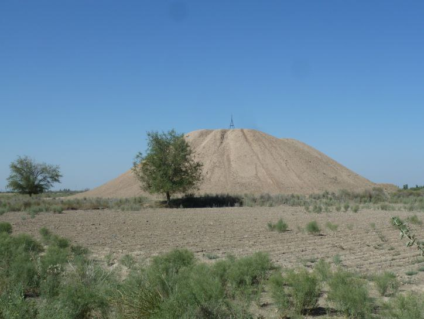
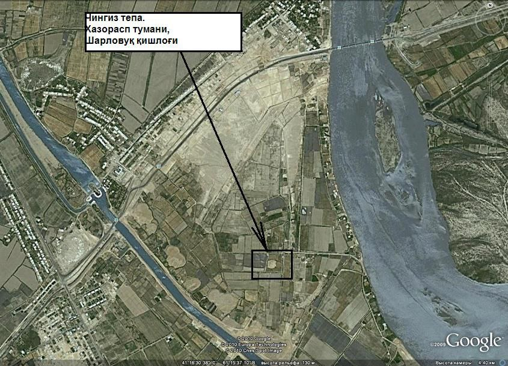

"CHINGIZ TEPA"
1. Me’moriy inshootning nomi:
"CHINGIZ TEPA"
2. Me’moriy inshoot tiklangan yil:
mil.avv IV-II asrlarga va milodiy XII-XIII asrlarga oid
3. Me’moriy inshoot joylashgan manzil:
Xorazm viloyati Hazorasp shahridan 18 km sharqda, Toshsoqa hududida joylashgan.
4. Me’moriy inshootning qurilish materiallari:
Xom g‘isht, paxsa - guvala, qum, yog‘och
5. Inshootning bosh fasadi h.k.lar:


6. Me’moriy inshootning o‘lchamlari
Chingiztepa majmuasida 3ta tepalik bo‘lib, diametri 60m; 21m; 30m.
7. Me’moriy inshoot to‘g‘risida tarixiy ma’lumot:
7. Me’moriy inshoot to‘g‘risida tarixiy ma’lumot:
Chingiztepa nomida 3 ta tepalik tadqiq qilingan. Chingiztepa-1 – Katta Chingiztepa deb ham ataladi. Yodgorlik konussimon shakldagi tepalik bo‘lib, balandligi 18 m.ni tashkil etadi. Aylanasi yuqori qismida 20 m, asosida esa 60 m. Chingiztepa-2 – Chingiztepa-1 yodgorligidan 300 m shimolda joylashgan aylana shakldagi tepalik. Aylanasi 21 m, balandligi esa 3.5 m ni tashkil etadi. Chingiztepa-2 yodgorligi asosan mayda tosh aralash sariq tuproqdan tiklangan. Chingiztepa-3 – Katta Chingiztepadan 3 km janubiy-g‘arbda joylashgan. Bu tepalik ham qo‘rg‘on shaklida bo‘lib, diametri 30 m, balandligi 3 m. Topilgan sopol buyumlar mil. avv. IV-II asrlarga taalluqli.
Afsonaga ko‘ra, Chingizxon Amudaryoni kechib o‘tganidan keyin o‘z askarlariga bir qism tuproqdan tashlab ketishni buyuradi. Shu tariqa Katta tepalik paydo bo‘ladi. Xorazmni zabt etganidan keyin orqaga qaytishda askarlariga yana bir bor bir qism tuproqdan tashlashni buyuradi. Ana shundan keyin Kichik tepalik vujudga keladi.
8. Me’moriy inshootning texnik holati:
Yer ustki qism 90% devor konstruksiyalari ekologik va texnogen ta’sirlar natijasida yo‘qolib ketgan
BOSH SAHIFAGA QAYTISH